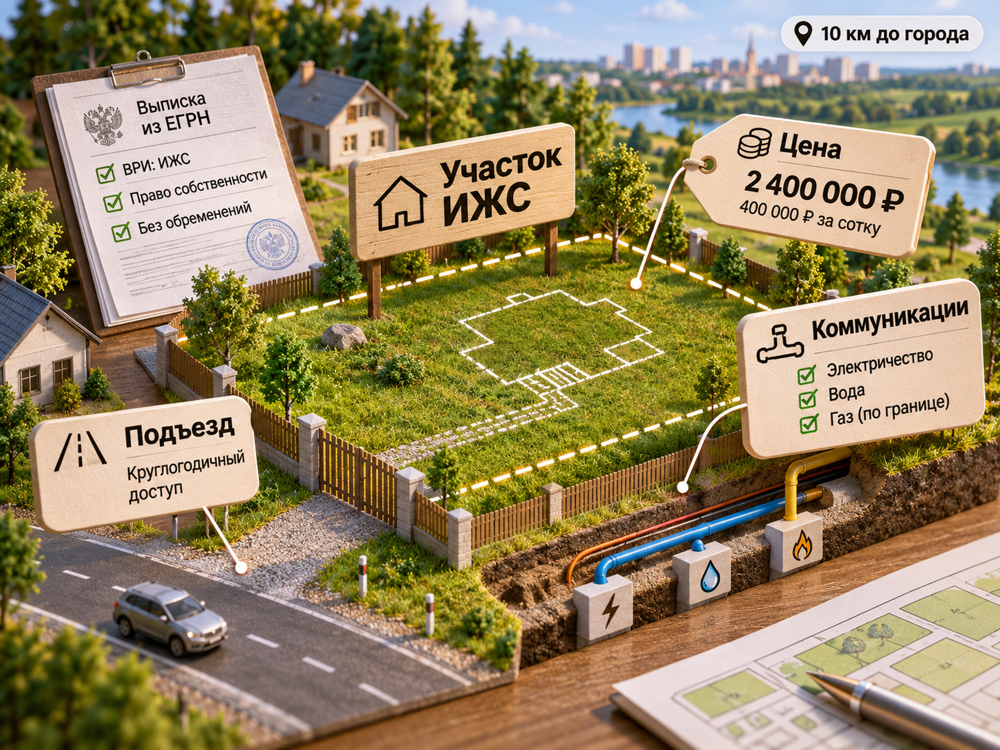
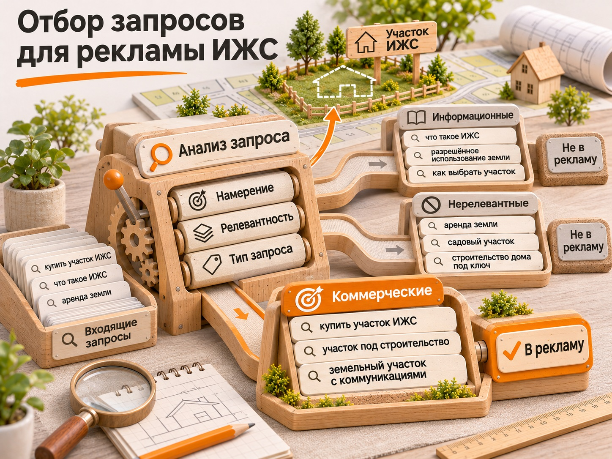
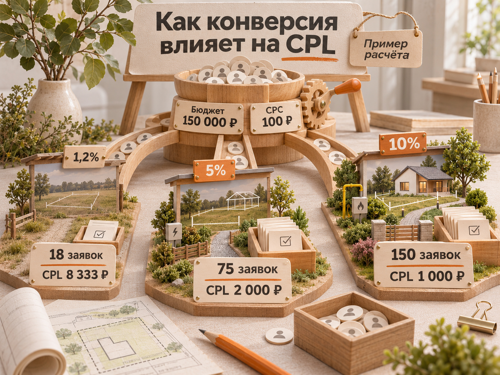

Блог о платном трафике
Продвижение участков ИЖС: реклама, бюджет и прогноз заявок в 2026 году
Для продажи земельных участков под ИЖС я бы сначала проверял сформированный спрос в Яндекс Директе и на площадках объявлений, затем подключал РСЯ, ретаргетинг и другие источники. Рекламировать нужно конкретную землю: с понятной ценой, местоположением, видом разрешённого использования, состоянием коммуникаций и условиями покупки. Результат оценивают не только по заявкам, но и по квалифицированным обращениям, выездам на участки и договорам.
В опубликованных кейсах 2026 года стоимость первичной заявки из Яндекс Директа на участки ИЖС различалась примерно от 1700 до 5000 ₽. Это результаты отдельных проектов, а не средняя цена лида по России. Ниже разберём, откуда берётся разброс, какой бюджет заложить на тест и как посчитать допустимую стоимость привлечения покупателя.
Что продвигают в сегменте ИЖС
ИЖС - индивидуальное жилищное строительство. Для рекламы продажи земли ключевое значение имеет не само сокращение, а конкретный объект, который может купить человек. В этой статье речь прежде всего о продаже земельных участков с видом разрешённого использования для ИЖС.
Нужно различать три предложения:
| Продукт | Что ищет покупатель | На что делать акцент |
|---|---|---|
| Свободный участок ИЖС | Землю для собственного строительства | Цена, локация, ВРИ, площадь, подъезд, сети |
| Участок с возможностью подряда | Землю и понятный вариант дальнейшего строительства | Стоимость земли отдельно, условия подряда и итоговый бюджет |
| Готовый дом с участком | Объект, в который можно въехать | Готовность, планировка, инженерия, отделка, финансирование |
У этих предложений разные запросы, требования к сайту и экономика заявки. Не стоит объединять их в одном объявлении так, чтобы человек не понимал, покупает ли он землю или готовое жильё. Подробно о рекламе именно строительных услуг есть отдельная статья «Реклама домов под ключ».
Что происходит на рынке участков ИЖС в 2026 году
По исследованию «Циана», опубликованному 11 сентября 2026 года, в январе-июле на земельные участки пришлось 76% сделок загородного рынка регионов России, на частные дома - 24%. Число сделок с участками выросло на 18% относительно января-июля 2025 года. Эти цифры охватывают земельные участки разных типов, а не только ИЖС.
В другом материале «Циана», опубликованном изданием «Движение.ру» в сентябре 2026 года, средняя цена сотки земли под ИЖС оценивалась в 336 тыс. ₽ по России, на 3% выше уровня годичной давности. Усреднение по стране не описывает цену в конкретном районе: транспортная доступность, коммуникации и близость к городу меняют её существенно.
Например, участок площадью 6 соток за 2,4 млн ₽ стоит 400 тыс. ₽ за сотку. На иллюстрации также условно показаны расстояние 10 км до города, круглогодичный подъезд, электричество, вода, газ по границе, ВРИ для ИЖС и отсутствие обременений. Это пример характеристик, а не проверенный объект продажи и не универсальная рыночная цена. Для рекламы конкретной земли нужно подтвердить каждую из этих характеристик и сравнить её стоимость с сопоставимыми предложениями в той же локации.
Для маркетолога важнее практический вывод: покупатель может искать и сравнивать землю заранее, но решение о покупке зависит от возможности построить дом, реальных затрат на коммуникации, подъезда и юридической чистоты участка. Красивый вид не заменяет этих сведений.
Как подготовить участок к продаже и рекламе
Прежде чем оплачивать трафик, соберите карточку каждого участка. В ней должны быть:

- точное местоположение, ориентир и маршрут подъезда;
- площадь, форма, рельеф и цена участка, а также стоимость сотки;
- категория земли и подтверждённый вид разрешённого использования;
- кадастровый номер, сведения ЕГРН и известные ограничения или обременения;
- электричество, газ, вода и канализация с точным указанием: подключено, проходит по границе или только планируется;
- фотографии земли с уровня человека, фото подъезда и, при наличии, съёмка с высоты;
- условия сделки, возможность и условия финансирования.
Фраза «все коммуникации» бесполезна, если покупатель не понимает, подключены ли они к участку. «Газ по границе» и «газ заведён на участок» тоже не равнозначны. Точную формулировку подтверждайте документами и техническими условиями.
С ипотекой ситуация аналогичная. Например, Банк ДОМ.РФ указывает возможность строительства жилого дома через подрядчика с расчётами по эскроу, в том числе с приобретением участка, в рамках семейной ипотеки при соблюдении условий программы. Это не означает, что любой свободный участок можно отдельно приобрести по семейной ипотеке. В рекламе нужно описывать только реально доступную для конкретного предложения схему.
Для массива участков полезны общая схема нарезки и доступность каждого лота, но не нужно превращать страницу отдельного участка в рекламную презентацию целого девелоперского проекта.
Какие каналы подходят для продвижения участков ИЖС
Канал выбирают по типу спроса, наличию предложений и возможности измерять качество контактов.
| Канал | Когда использовать | Как оценивать эффективность |
|---|---|---|
| Яндекс Директ, Поиск | Есть коммерческие запросы на покупку земли в нужных направлениях | CPC, конверсия сайта, CPL, квалификация, выезды и сделки |
| Яндекс Директ, РСЯ и ретаргетинг | Нужно расширить охват и вернуть заинтересованных посетителей | Стоимость подходящего обращения и последующие выезды |
| Авито | Есть конкретные лоты с фотографиями, ценой и характеристиками | Цена контакта, доля целевых обращений, стоимость выезда и сделки |
| Циан и Домклик | Покупатели сравнивают объекты недвижимости в каталогах | Просмотры карточек, обращения, выезды и продажи |
| SEO | Есть сайт с большим ассортиментом, направлениями и полезными страницами | Целевой органический трафик, обращения и сделки |
| VK Реклама, Telegram Ads | Есть гипотеза об аудитории и отдельный бюджет на тест | Не только цена контакта, но и квалификация по CRM |
У площадок разная модель подсчёта обращений. Клик по телефону, сообщение в чате, заполненная форма и квалифицированный покупатель - не одинаковые события. Поэтому сравнение «Авито дало лид по 500 ₽, Директ по 3000 ₽» без CRM может привести к неверному выбору канала.
Как работать с объявлениями на Авито и Циане
Для каждого участка указывайте конкретную цену, реальный статус земли и особенности подъезда. Не заменяйте фотографии доступных участков рендерами будущих домов. Если площадка допускает пакетное размещение, важно сохранять различия лотов, а не публиковать копии одного объявления с разными заголовками.
Платное продвижение карточек стоит тестировать на участках с понятным предложением и достаточным запасом по марже. У Циана стоимость размещения и продвижения зависит от параметров объекта и региона, а окончательная цена показывается при оформлении услуги. Универсального фиксированного тарифа для всех участков нет.
В опубликованном 26 февраля 2026 года кейсе Kiselev Digital по рекламе земельных участков на Авито после переработки карточек, фотографий и описаний число выездов выросло с 22 до 74 в месяц, а сделки - с 2 до 9 при бюджете 80 тыс. ₽. По данным автора, стоимость сделки снизилась примерно с 40 тыс. до 8,9 тыс. ₽. Это конкретный проект, а не показатель, который можно автоматически перенести на другой регион.
Как рекламировать участки ИЖС в Яндекс Директе
Поиск: разделяем коммерческие, информационные и нецелевые запросы
Поиск нужен прежде всего для людей с явным намерением купить землю. Отправная точка - фразы, которые соответствуют вашему продукту, цене и географии.
| Тип запроса | Примеры | Решение |
|---|---|---|
| Коммерческий целевой | «купить участок ИЖС», «земельный участок под строительство дома», «участок ИЖС с коммуникациями», «купить землю [район]» | Основной приоритет для продаж |
| Информационный | «как проверить ВРИ участка», «какие документы нужны для покупки земли», «как выбрать участок под дом» | Отдельный контент и, при доказанной эффективности, отдельный рекламный тест |
| Нецелевой для продажи земли | «аренда земли», «строительство дома под ключ», «купить готовый дом» | Исключить либо отделить в другой продукт, если он есть |

Запрос «садовый участок» не всегда однозначно нецелевой: часть аудитории сравнивает разные виды земли. Его релевантность зависит от фактического предложения, а не от наличия слова «садовый». Не следует автоматически добавлять его в коммерческую кампанию ИЖС без анализа поисковых запросов и обращений.
Не все слова, которые выглядят коммерческими, одинаково полезны. «Купить землю» может относиться к сельхозземле, промышленным участкам или инвестициям. Поэтому после запуска смотрят отчёт по реальным поисковым запросам, а не только первоначальный список ключевых фраз.
География: где ищут, а не только где находится участок
Покупатель может жить в городе, посёлке, сельской местности или другом регионе. Продаваемый участок при этом остаётся в одной точке. Географию кампании выбирают по спросу на направление, доступности показов и качеству полученных обращений, а не простым радиусом вокруг объекта.
В 2026 году Яндекс обновил механизм геотаргетинга. Директ учитывает не только текущее местонахождение человека, но и признаки интереса к выбранному региону. Прежняя отдельная настройка расширенного геотаргетинга стала недоступна. Это означает, что нельзя строить инструкцию на старом переключателе, но нужно проверять реальные регионы показов и качество лидов.
Практический порядок: выбрать обоснованные регионы, разделить важные направления по смыслу поисковых запросов, посмотреть реальные обращения по географии и только затем расширять или сужать охват. Излишне точные радиусы могут отсечь покупателей, которые живут дальше, но ищут участок именно в этой местности.
РСЯ и ретаргетинг
В РСЯ предложение должно быть узнаваемым: реальный вид участка, стоимость, направление, площадь и одна-две подтверждённые особенности. Рендер коттеджа без пояснения, что продаётся только земля, способен привлечь неподходящих людей.
Ретаргетинг полезен для тех, кто смотрел конкретные лоты, маршрут, цены или документы, но ещё не обратился. Таким пользователям можно показать актуальную доступность участков либо предложить получить план и согласовать просмотр. Не надо считать любое повторное посещение признаком готовности к покупке.
Стратегия и цели
Не включайте оплату за конверсии по редкой цели «договор», если сделок несколько в месяц. По действующим рекомендациям Яндекса для обучения стратегии желательно не менее 10 конверсий в неделю, а недельного бюджета должно хватать хотя бы на 10 целевых событий по заданной цене. На старте может быть целесообразнее работать с более частыми и проверенными событиями: отправленной формой, звонком или обращением в мессенджере.
При этом нельзя терять связь с качеством. Если квалифицированных лидов недостаточно для отдельной оптимизации, используйте CRM, чтобы анализировать кампании, запросы, аудитории и другие признаки, связанные с подходящими обращениями. Не стоит дробить небольшую статистику между множеством узких кампаний.
Реальные кейсы продвижения участков ИЖС в 2025-2026 годах
Ниже показатели, опубликованные агентствами и авторами проектов. Они не прошли независимый аудит, а критерии заявок различаются. Продажи можно сравнивать с CPL только там, где автор раскрыл их связь с рекламой и период наблюдения.
| Проект и период | Канал и расходы | Опубликованный результат |
|---|---|---|
| ИЖС в Подмосковье, апрель 2026, Nutex Digital | Яндекс Директ, 244 599 ₽ за месяц | 66 заявок, CPL 3706 ₽; 49 квалифицированных |
| Участки ИЖС в 40 км от МКАД, октябрь 2025 - январь 2026, Виталий Денисенко, цифры из опубликованной сводки кейсов | Яндекс Директ, 348 409 ₽ за четыре месяца | 209 заявок, CPL 1667 ₽; автором заявлены 11 продаж |
| Участки по Киевскому шоссе, кейс MAKO опубликован в мае 2026 | Яндекс Директ, общий бюджет не раскрыт | После оптимизации 206-240 заявок в месяц с CPL 4838-5012 ₽ |
| Продажа земельных участков, кейс Kiselev Digital опубликован в феврале 2026 | Авито, 80 000 ₽ в месяц | 74 выезда и 9 сделок в месяц после изменений; около 8900 ₽ на сделку по данным автора |
В подмосковном кейсе Nutex Digital расчётная стоимость квалифицированного лида составила 244 599 / 49 = 4992 ₽. Это уже полезнее, чем один CPL 3706 ₽. В публикации расходятся сведения о числе «тёплых» обращений, поэтому их не используем для расчёта следующей стадии.
Кейс с 209 заявками приведён по опубликованной подборке 2026 года, а не по независимо проверенной выгрузке. Продажи указаны как результат по словам автора. Для проекта MAKO также не раскрыта стоимость договора, поэтому переносить его CPL в прогноз продаж нельзя.
Разброс примерно 1700-5000 ₽ за первичную заявку в этих примерах не означает, что любой новый проект попадёт в этот интервал. На стоимость влияют цена участков, конкуренция, регион, оффер, сезон, конверсия сайта и определение заявки.
Сколько стоит продвижение ИЖС: бюджет и прогноз
Для первичного теста продаж отдельных участков я бы рассматривал 80-150 тыс. ₽ в месяц при ограниченной географии и понятном предложении. Для нескольких направлений и конкурентных локаций стартовый план может составлять 150-250 тыс. ₽ и выше. Это рабочие бюджеты для медиапланирования, а не доказанный минимум рынка. Они не включают создание сайта, съёмку и работу подрядчика.
Фиксировать план только через «средний CPL в России» неправильно. Сначала оценивают цену клика и конверсию страницы, затем считают заявки и только после этого - квалификацию и продажи.
Как конверсия сайта меняет стоимость заявки
Пример расчёта с явно условными параметрами: рекламный бюджет 150 000 ₽, средняя цена клика 100 ₽, значит ожидается 1500 кликов. В зависимости от конверсии посадочной страницы получаем:
| Конверсия клика в заявку | Расчётное число заявок | CPL |
|---|---|---|
| 1,2% | 18 | 8333 ₽ |
| 5% | 75 | 2000 ₽ |
| 10% | 150 | 1000 ₽ |

Формулы: клики = бюджет / CPC, заявки = клики × конверсия, CPL = бюджет / заявки. Значения 1,2%, 5% и 10% показывают разные сценарии, а не общероссийскую статистику конверсии сайтов ИЖС. Конверсия 10% может быть недостижимой для части трафика и не гарантирует качественных контактов.
Чем лучше объявление соответствует реальной карточке участка, тем легче оценивать и повышать конверсию. Но высокая конверсия бесполезна, если заявки оставляют люди, которым не подходит бюджет или юридический статус земли.
Как рассчитать допустимый CPL от экономики продажи
Сначала определите максимальные затраты на привлечение одного покупателя. Для этого нужна не цена продажи участка сама по себе, а маржинальный доход с учётом себестоимости земли, инфраструктуры и прочих расходов, после которых остаётся ресурс на маркетинг.
Условный пример: на одну продажу бизнес готов потратить не больше 60 000 ₽ рекламного бюджета. Из 100 первичных заявок в договор переходит четыре человека, то есть конверсия лида в продажу 4%. Тогда допустимый CPL равен 60 000 × 4% = 2400 ₽.
Если при том же предельном CAC в договор переходят только 2%, допустимый CPL снижается до 1200 ₽. Поэтому нельзя оценивать рекламу земли только по цене первичного обращения.
Для более точного плана ведите отдельные показатели:
- CPL: расходы / все первичные заявки;
- стоимость квалифицированного лида: расходы / подходящие обращения;
- стоимость выезда: расходы / состоявшиеся просмотры;
- CAC: расходы / заключённые договоры.
Сравнивайте эти показатели на одинаковом временном горизонте: лиды из рекламы текущего месяца могут стать сделками позже. Если цикл сделки длинный, анализируйте когорты по дате первого обращения и последующим этапам в CRM.
Как увеличить долю реальных покупателей
Квалификация должна отвечать на конкретные вопросы: подходит ли покупателю направление, бюджет, ВРИ и формат предложения; рассматривает ли он покупку в обозримый срок; заинтересован ли в просмотре. Не надо считать «некачественным» человека только потому, что он пока сравнивает варианты.
На странице участка полезнее предложить посмотреть свободные лоты, скачать точный план, уточнить стоимость подключения сетей или согласовать просмотр, чем собирать номер телефона через пустую кнопку «Узнать подробнее».
При обработке обращения менеджеру нужна карточка объекта, которую человек видел в рекламе. Иначе заявка о конкретном участке превращается в разговор о несуществующем «бюджетном варианте».
Передача квалификации и продаж в аналитику
В Яндекс Метрику можно передавать офлайн-события, связывая их с посещениями сайта. Для этого желательно сохранять ClientID и другие допустимые идентификаторы при поступлении обращения. Подходящие события - квалификация, согласованный просмотр, бронь, договор, если их можно корректно связать с клиентом и периодом атрибуции.
Обычные офлайн-конверсии нужно загружать своевременно: для их привязки к посещениям действует ограниченный период, в стандартном сценарии - 21 день. Поэтому не стоит рассчитывать, что договор через три месяца автоматически привяжется к старому клику без правильно устроенной CRM-аналитики. Проверяйте долю успешно привязанных событий и отдельно храните полную историю клиента.
Именно эта связка позволяет отличить кампанию с дешёвыми пустыми обращениями от кампании, которая приводит просмотры и договоры. О том, как организовать эту оценку, есть отдельный материал «Квалификация лидов в продажах».
Ошибки, из-за которых реклама участков теряет бюджет
Неясный продукт. В объявлении показан готовый дом, а продаётся только земля. Часть обращений будет нецелевой уже по определению.
Скрытая цена и статус сетей. Посетитель не может оценить покупку до звонка. Менеджеры получают людей с неподходящими ожиданиями.
Слишком широкая семантика. Запросы про аренду земли и услуги строительства смешиваются с покупкой участка. Расход растёт, а квалификация падает.
География только вокруг участка. Реклама не учитывает аудиторию, которая ищет землю из других населённых пунктов. Обратная ошибка - рекламировать весь регион без проверки спроса.
Одинаковые карточки разных лотов. Нет реальных фотографий, границ, схемы проезда и различий в цене.
Оптимизация только по заявке. Алгоритм получает сигнал от любых форм, а отдел продаж оценивает совсем другие признаки хорошего покупателя.
Слишком ранние выводы по договорам. Если продажи происходят спустя месяцы после клика, недельный отчёт по CAC может быть недостоверен.
Пошаговый запуск рекламы участков ИЖС
- Подготовить перечень продаваемых участков: цена, площадь, документы, ВРИ, сети, подъезд, фотографии.
- Проверить цены сопоставимых объектов и сформулировать отдельные предложения для разных направлений.
- Определить допустимую стоимость привлечения покупателя исходя из маржинальности и плановой конверсии в договор.
- Подготовить посадочную страницу и объявления на классифайдах; проверить совпадение цены и характеристик.
- Настроить Метрику, звонки и CRM с передачей идентификаторов и статусов обращений.
- Запустить Поиск Яндекс Директа по коммерческим запросам, отдельно проработать географию.
- Тестировать РСЯ, ретаргетинг и дополнительные площадки, не смешивая их результаты в одну цифру CPL.
- Еженедельно проверять поисковые запросы, качество обращений, причины отказа и назначенные выезды.
- По мере накопления данных перераспределять бюджет по стоимости квалифицированного лида, просмотра и сделки.
Для старта достаточно таблицы с бюджетом, CPC, конверсией сайта, квалификацией и фактическими продажами. Если первые две цифры можно оценить до запуска, следующие нужно проверять на данных конкретного проекта. Именно поэтому прогноз продвижения ИЖС разумно давать диапазоном с допущениями, а не обещанием фиксированного количества покупателей.
Автор: Максим Мирошников, специалист по платному трафику и Яндекс Директу.